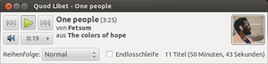
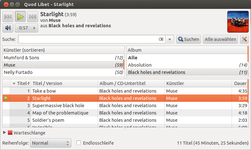
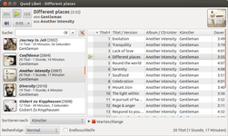
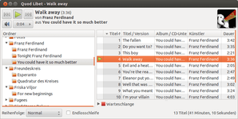

Quod Libet
Dieser Artikel wurde für die folgenden Ubuntu-Versionen getestet:
Ubuntu 14.04 Trusty Tahr
Zum Verständnis dieses Artikels sind folgende Seiten hilfreich:
Quod Libet (QL)  ist ein auf Python und GTK+ basierendes Programm zum Abspielen von Audiodateien und Audiostreams. Das Programm kann Musikbibliotheken von mehreren zehntausend Musikdateien problemlos verwalten. Zusätzlich bietet QL alles, was man von einem modernen Audio-Player erwartet: Unicode Unterstützung, Nutzung der Multimediatasten mancher Tastaturen und Metadaten-Bearbeitung (siehe auch Ex Falso). Darüber hinaus lassen sich beliebige Suchvorgänge (auch reguläre Ausdrücke) definieren, um daraus Abspiellisten (Playlisten) zu erstellen.
ist ein auf Python und GTK+ basierendes Programm zum Abspielen von Audiodateien und Audiostreams. Das Programm kann Musikbibliotheken von mehreren zehntausend Musikdateien problemlos verwalten. Zusätzlich bietet QL alles, was man von einem modernen Audio-Player erwartet: Unicode Unterstützung, Nutzung der Multimediatasten mancher Tastaturen und Metadaten-Bearbeitung (siehe auch Ex Falso). Darüber hinaus lassen sich beliebige Suchvorgänge (auch reguläre Ausdrücke) definieren, um daraus Abspiellisten (Playlisten) zu erstellen.
Durch zahlreiche Plugins lassen sich zusätzlich Dienste wie last.fm  oder MusicBrainz nutzen. Informationen über das gerade gespielte Stück lassen sich über ein On Screen Display oder "libnotify" (ähnlich den Benachrichtigungen beim Update) ausgeben.
oder MusicBrainz nutzen. Informationen über das gerade gespielte Stück lassen sich über ein On Screen Display oder "libnotify" (ähnlich den Benachrichtigungen beim Update) ausgeben.
Installation¶
 Quod Libet ist in den offiziellen Paketquellen enthalten. Folgendes Paket muss installiert [1] werden (die optionalen Pakete sind Plugins oder sorgen dafür, dass die Plugins problemfrei funktionieren):
quodlibet (universe)
quodlibet-ext (universe, optional)
quodlibet-plugins (universe, optional)
 mit apturl
mit apturl
Paketliste zum Kopieren:
sudo apt-get install quodlibet quodlibet-ext quodlibet-plugins
sudo aptitude install quodlibet quodlibet-ext quodlibet-plugins
Fremdquellen¶
Eine unter Umständen aktuellere Version kann man über ein "Personal Package Archiv" (PPA) installieren.
Adresszeile zum Hinzufügen des PPAs:
ppa:lazka/ppa
Hinweis!
Zusätzliche Fremdquellen können das System gefährden.
Ein PPA unterstützt nicht zwangsläufig alle Ubuntu-Versionen. Weitere Informationen sind der  PPA-Beschreibung des Eigentümers/Teams lazka zu entnehmen.
PPA-Beschreibung des Eigentümers/Teams lazka zu entnehmen.
Damit Pakete aus dem PPA genutzt werden können, müssen die Paketquellen neu eingelesen werden.
Funktionen¶
Musikbibliothek¶
Wie schon erwähnt wurde, kann QL sehr große Sammlungen (mehrere hundert Gigabyte) problemlos verwalten. Die Einstellungen hierfür sind im Menü unter
"Musik -> Einstellungen -> Bibliothek"
zu finden. Über den Dateibrowser lassen sich Verzeichnisse hinzufügen. Möchte man mehrere Verzeichnisse zur Bibliothek hinzufügen, so müssen diese mit einem Doppelpunkt ":" getrennt werden. Beispiel:
/pfad/zu/verzeichnis1:/ganz/anderer/pfad/zu/verzeichnis2
Weitere wichtige Funktionen sind:
"Musik -> Bibliothek auffrischen": die Bibliothek schnell nach neuen oder gelöschten Dateien durchsuchen. Hat man einen externen Datenträger mit Musikdateien in der Bibliothek eingebunden und ist der Datenträger aktuell nicht angeschlossen, so werden die Dateien, die dadurch nicht gefunden werden, maskiert. D.h. sie werden in der Datenbank nicht angezeigt, doch Abspielzähler und die Bewertungen bleiben erhalten. Erst wenn der externe Datenträger wieder eingehängt ist und die Datei wirklich nicht mehr vorhanden ist, wird sie auch tatsächlich aus der DB gelöscht.
"Musik -> Bibliothek neu laden": baut die Musikbibliothek komplett neu auf, indem es die Metadaten aller Dateien erneut ausliest. Interne Daten, wie Abspielzähler oder Bewertungen, gehen dabei nicht verloren.
Ansichten¶
Der größte Vorteil von Quod Libet ist, dass man nicht auf eine Ansicht festgelegt ist und die Programmoberfläche eigenen Wünschen anpassen kann. Anwender, die Musik lieber Album für Album hören, finden in der Albenansicht eine ideale Anzeige. Über die Browseransicht kann man sehr leicht ein Stück suchen. Ist die Musiksammlung sehr groß, ist das die nützlichste Anzeige. Will man seine Festplatte durchstöbern, so kann man das aus der Dateisystem-Ansicht tun.
|  |
| Browseransicht |
|  |
| Albenliste |
|  |
| Dateisystem |
Für Internet-Audio-Streams und die Dateisuche existieren noch weitere Ansichten.
Tag-Editor¶
QL benutzt den eingebauten Tag-Editor Ex Falso, der inzwischen auch ohne QL verwendbar ist. Hinweise zur Installation und Nutzung finden sich im entsprechenden Artikel.
Albumcover¶
Quod Libet zeigt Bilddaten, die es in den Albumordnern findet, als Cover an. Üblicherweise nutzt QL folgende Bilder
.folder.png oder .folder.jpg (Dies ist ein gebräuchliches Format, das auch andere Player nutzen)
Andere Bilddaten im Albumordner werden ebenfalls genutzt
Albumbilder in ID3v2 Tags werden ebenfalls genutzt
Hat man seine Ordner noch nicht mit Bildern der Albumcover bestückt, so kann man dies sehr leicht mit dem "Album Art Plugin" nachholen. Dieses Plugin ist ebenfalls in quodlibet-plugins enthalten und ermöglicht, dass man bei einem Rechtsklick auf ein Album mit
"Plugins -> Download Album Art"
ein passendes Albumcover von den Webseiten der Firma Amazon herunterladen kann.
Tray-Icon¶
Quod Libet zeigt normalerweise kein Symbol im Benachrichtigungsfeld (Notification-Area) an, wie es teilweise bei anderen Mediaplayern der Fall ist. Wer es verwenden möchte, muss dies erst aktivieren. Dieses entsprechende Plugin befindet sich im Paket quodlibet-plugins und lässt sich leicht mit
"Plugins -> Tray Icon"
aktivieren. Nach der Aktivierung ist es dann jederzeit möglich, mittels Rechtsklick  auf das Symbol im Panel die Wiedergabe zu pausieren/starten und zum nächsten/vorherigen Titel zu springen.
auf das Symbol im Panel die Wiedergabe zu pausieren/starten und zum nächsten/vorherigen Titel zu springen.
Musiktitel per Klick starten¶
Um Musikdateien per einfachem  -Klick in Nautilus zu starten, kann man ein Skript in den "Öffnen mit"-Dialog eintragen. Dieses Skript überprüft, ob QL bereits läuft, startet es ggf. und spielt dann die Datei ab. Der folgende Code wird in eine neue Datei mit beliebigem Namen eingefügt, beispielsweise ~/bin/qlstart.sh:
-Klick in Nautilus zu starten, kann man ein Skript in den "Öffnen mit"-Dialog eintragen. Dieses Skript überprüft, ob QL bereits läuft, startet es ggf. und spielt dann die Datei ab. Der folgende Code wird in eine neue Datei mit beliebigem Namen eingefügt, beispielsweise ~/bin/qlstart.sh:
1 2 3 4 5 6 7 | #!/bin/sh if ! ps x | grep -q "[u]sr/bin/quodlibet" # Ermittelt, ob quodlibet läuft then quodlibet & # Startet quodlibet sleep 5 # Wartet 5 Sekunden, bis quodlibet läuft fi quodlibet --play-file="$1" # spielt die Datei ab |
Diese Datei muss anschließend ausführbar [3] gemacht werden.
Als nächstes muss man die Verwendung dieser Datei in Nautilus aktivieren. Dazu klickt man mit auf eine Musikdatei und wählt "Mit anderer Anwendung öffnen ...". Hier dann "benutzerdefinierten Befehl benutzen" und die gerade erstellte Skriptdatei auswählen. Im Feld müsste jetzt so etwas wie '/home/<Benutzername>/bin/qlstart.sh' stehen. Hinter diese Zeile fügt man noch ein %f ein. Zum Schluss den Haken bei "Diese Anwendung für alle XXX-Dateien verwenden" setzen und bestätigen.
Links¶
Quod Libet - Wikipedia
Diskussion im hiesigen Forum für Verbesserungsvorschläge etc.
AudioPlayer
 Programmübersicht
Programmübersicht
- Erstellt mit Inyoka
-
 2004 – 2017 ubuntuusers.de • Einige Rechte vorbehalten
2004 – 2017 ubuntuusers.de • Einige Rechte vorbehalten
Lizenz • Kontakt • Datenschutz • Impressum • Serverstatus -
Serverhousing gespendet von